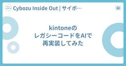
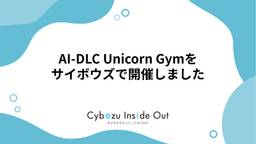

Cybozu Inside Out | サイボウズエンジニアのブログ
https://blog.cybozu.io/
サイボウズ株式会社、サイボウズ・ラボ株式会社のエンジニアが提供する技術ブログです。製品やサービスの開発、運用で得た技術情報やエンジニアの活動、採用情報などをお届けします。
フィード

kintoneのレガシーコードをAIで再実装してみた
Cybozu Inside Out | サイボウズエンジニアのブログ
初めにkintone チームの前田です。kintone には結構な量のレガシーコードがあります。このレガシーコードに対して AI を使って再実装できないかを実験してみました。先に結果だけお伝えすると、うまく再実装できてコードベースに取り込めたものもあれば、うまくいかないものもありました。なお、利用したエージェントは Claude Code、モデルは Claude Opus 5 (1M コンテキスト版) です。AI への指示や情報は、増やせば増やすほど求める実装が生成されやすくなるとは思いますが調整も大変になってくるので、必要最小限にして実験しました。試行回数についてもどの実験でも一回としました。モジュールの再実装今回のリライト対象は kintone のサーバーサイドです。Java で書かれていて総行数は 50 万行を超えています。kintone のサーバーサイド全体をそのまま AI に投げつけるのは現実的ではありません。そこで再実装の対象は kintone 内のモジュールとしました。これで製品の全体に影響を及ぼすことがなくなり、リスクがぐっと下がります。コードレビューができるようになりますし、自動テストも可能です。ここでの自動テストは、モジュールに対する結合テストになっています。それによってデグレしたかどうかを迅速に AI に伝えることもできます。blog.cybozu.ioモジュールkintone では、アプリ設定機能であればアプリ設定モジュール、アプリ機能であればアプリモジュールというように、機能と実装が対応づくようにモジュール分けされています。blog.cybozu.ioモジュールの内部実装は完全にモジュール内に閉じています。定められた公開インターフェイス以外の部分は他のモジュールから依存されないようになっています。したがって、どれだけモジュールの内部実装を変えたとしても、公開インターフェイスの振る舞いを変えてない限りモジュールの機能的な役割の面では問題ありません。実験 1: 整った実装 + 全て AI にお任せ最初に再実装をしたのは 1,000 行ほどの、そこまで規模が大きくないモジュール (モジュール A) です。クリーンアーキテクチャを参考にユースケースレイヤーやエンティティ、ゲートウェイを導入して役割分担が整理されています。このモジュールは何か新しい手
2日前

Mythos 対策プロジェクトの 2 ヶ月(まとめ編) 2
2
Cybozu Inside Out | サイボウズエンジニアのブログ
Logos ProjectMythos 級 AI が公開されることをリスクと捉え、Horos というハーネスと、Ergon という LLM-Wiki を作ってきた Logos というプロジェクトを実施しました。Logos: このプロジェクトの名前Horos: ハーネスの名前Ergon: LLM-Wiki の名前Logos の全体像今回は、全体のまとめとして、Logos が走った 2 ヶ月の振り返りを紹介したいと思います。Mythos 対策プロジェクトの 2 ヶ月(概要編) Mythos 対策プロジェクトの 2 ヶ月(ハーネス編) Mythos 対策プロジェクトの 2 ヶ月(LLM-Wiki 編)> Mythos 対策プロジェクトの 2 ヶ月(まとめ編) ハーネスを持つメリット結果から言うと、Mythos そのものは公開されず、セーフガード版の Fable が公開されたところまでが現状です。その意味では「Mythos は公開されなかったから杞憂だった」と思われてしまうかもしれませんが、私たちはそうは思っていません。確かに Mythos は公開されていませんが、他のモデルも同じように成長しています。高度なモデルはセーフガードを付けないと公開できない流れはありますが、全てのモデルが本当にセーフガード付きで公開される保証はありません。特に Local LLM として公開されるオープンウェイトのモデル(例えば Kimi K3)なども、今後同じような脅威として捉えていく必要はあるでしょう。モデル進化への追従Horos ハーネスは、モデルの切り替えができるように設計しています。今後上位のモデルが公開された際は、攻撃者と同時に私たちもそのアクセスを手に入れ、それを Horos で使うことで、精度を上げながら改善していく地盤ができました。これを持っていることは、製品を守る立場としては、心強いアドバンテージです。また、今は Claude Code などを使ってスキャンを回していますが、自社では Local LLM の実行環境も持っています。Local LLM の上位モデルが出た際に、それを自分たちで動かし、Horos の実行をそちらにしていく計画もあります。Kimi K3 レベルのモデルが動かせる環境の調達も計画があり、実現したらスキャン結果の精度もそうですが、本当に「24h 365d
2日前

Mythos 対策プロジェクトの 2 ヶ月(LLM-Wiki 編) 1
Cybozu Inside Out | サイボウズエンジニアのブログ
Logos ProjectMythos 対策プロジェクトとして、製品の脆弱性スキャンができるハーネス "Horos" を開発しました。このハーネスのなかで、とりわけスキャン精度向上に重要なのが、「どうやって社内にある製品の知識を Horos に渡すか」でした。私たちはここに、LLM-Wiki の仕組みを取り入れています。名前は、Ergon ちゃんです。Ergon = 仕事・働きMythos が「来たるべき強いモデル」、Logos が「整理された知・理性」を指すのに対し、Ergon は今まさに編纂とスキャンを回している "働き手" を表す。Mythos 対策プロジェクトの 2 ヶ月(概要編) Mythos 対策プロジェクトの 2 ヶ月(ハーネス編) > Mythos 対策プロジェクトの 2 ヶ月(LLM-Wiki 編)Mythos 対策プロジェクトの 2 ヶ月(まとめ編) 社内製品知識 LLM-Wiki ErgonLogos 全体像どんなに AI モデルが進化しても、AI が知っている情報は公開されたもののみです。もちろん、「Web アプリではこんな脆弱性が知られている」といった知識はたっぷり知っているので、一般的な脆弱性があれば、それはあぶり出してくれるでしょう。しかし、製品にある脆弱性は、そうした一般的なものだけではありません。例えば、kintone は情報共有のプラットフォームです。「A さんが作ったレコードを、権限の無いはずの B さんが見られた」というだけで、それは脆弱性です。実際、脆弱性報奨金制度を運用する中でも、そうした権限に関する脆弱性は受理し、報奨金をお支払いしてきました。ところが、こうした現象が脆弱性なのかどうかを判断するには、kintone の仕様について知っている必要があります。他にも、「どうしてこの実装になっているのか」といった、意思決定の履歴も、コードを読む際に役立ちますよね？それは人間でも AI でも一緒です。コードだけを渡すのではなく「コードに書かれていない、社内に蓄積された情報」もハーネス経由で提供することで、スキャンの精度は上がっていきます。では、どうやって情報を渡すのが良いでしょうか？LLM-Wiki社内のドキュメントのなかには、AI には渡せない情報もあります。ドメインを指定して Fetch を許可するのはリスクが高すぎます。そ
2日前

AI-DLC Unicorn Gymをサイボウズで開催しました
Cybozu Inside Out | サイボウズエンジニアのブログ
こんにちは！開発本部のAI Catalystチームの加瀬（ @Kesin11 ）です。8/17 - 18にAI-DLCという開発手法を体験するAI-DLC Unicorn GymイベントをサイボウズとAWS様の共同開催で実施しました。サイボウズ内でプロダクト開発に携わっているメンバーが新しいAIネイティブな開発手法に触れた様子をイベントレポートとしてお伝えします。AI Catalystチームについてその前に、少しだけ自分が所属しているAI Catalystチームについて紹介させてください。サイボウズでは以前から開発本部のAIやっていきチームが中心となって様々なAI開発ツールを業務で利用できるように整備してきましたサイボウズで利用可能な AI コーディングツールの紹介 - Cybozu Inside Out | サイボウズエンジニアのブログその結果、比較的早期からAIコーディングツールを活用するエンジニアを中心にAIを利用する方は増えていたのですが、その活用は個人が中心となってしまいチーム全体での利用はボトムアップではなかなか進まなかったという課題がありました。そこで今年の1Qから、開発本部でAIを活用してプロダクトを成長させるためのAI Catalystチームが立ち上がりました。Catalystは英語で「触媒・促進の働きをするもの・相手に刺激を与える人」という意味でチームの立ち位置にピッタリであることと、日本語で「語りスト」とも読めるダブルミーニングで採用されました。AI-DLC（AI駆動開発ライフサイクル）とはAI-DLCはAWSが提唱しているAI時代の新たな開発手法です。従来の開発プロセスをAIでサポートするのとは異なるアプローチで、AIの能力を最大限に生かすように開発プロセス全体を再設計したものです。AIがプランニング、タスク分解、実装などを行い、人間はAIのプランや実装に対して検証や意思決定を行うというサイクルで開発を進めていきます。AI-DLCの全体の流れはInception -> Construction -> Operationの3フェーズで構成されており、各フェーズで得たコンテキストを引き継ぎながら次のフェーズに移っていきます。Inception: ビジネス上の目的を要件、ユーザーストーリー、作業単位（Units）へと細分化を行うConstructi
3日前

iOSDC Japan 2026 にゴールドスポンサーとして協賛します！
Cybozu Inside Out | サイボウズエンジニアのブログ
こんにちは、iOSエンジニアの @tochi86_ です。今年も iOSDC Japan の時期が近づいてまいりました。「iOSDC Japan」とは、iOS関連技術をテーマとした iOS技術者のためのカンファレンスです。 iosdc.jpサイボウズでは、kintone / サイボウズOffice / Garoon の3製品のモバイルアプリを開発・運用しており、SwiftUI や Swift Concurrency を積極的に使い、Swift Package によるマルチモジュール構成やモダンな技術に適したテスタビリティの高い設計に挑戦したりと、iOSアプリ開発に力を入れています。当日ブース当日はサイボウズのブースにて、時間帯ごとにトークテーマを設定しています。トークテーマ一覧「#開運夏まつり」「#開運冬まつり」また今回の iOSDC Japan 2026 限定で、特別なデザインのキーボードキーホルダーを製作しました。（押すと光ります✨）限定キーボードキーホルダー社員登壇情報スポンサーセッション9/12(土) day1 Track C 11:25〜（20分）@el_metal_fortee.jpレギュラートーク9/12(土) day1 Track D 16:45〜（40分）@el_metal_fortee.jpアフターイベントiOSDC Japan 2026 終了後には、STORES さんとサイボウズの2社合同アフターイベントを開催します！DroidKaigi × iOSDC After Nightcybozu.connpass.comiOSDC Japan や DroidKaigi に参加した方、モバイル開発に興味のある方向けに、各社エンジニアによるLTと交流会を行います。サイボウズでは「#チームワークあふれる社会を創る」という理念を実現するべく、iOSエンジニアを絶賛募集中です！ 詳しくは下記をご参照ください。cybozu.co.jp
4日前
Mythos 対策プロジェクトの 2 ヶ月(ハーネス編) 5
Cybozu Inside Out | サイボウズエンジニアのブログ
Logos ProjectMythos 級 AI の公開をリスクと捉え、AI を用いた製品のセキュリティスキャンを行うハーネスを開発しました。ハーネスを "Horos" と名付けました。Horos 境界標／定義・術語: サンドボックス境界と「判定基準」の二重義ハーネスエンジニアリング/ループエンジニアリングなど、いろいろなところで聞く言葉ですが、私たちが開発した「セキュリティスキャンハーネス」とはどういうものだったのか。今回は、その概要をご紹介します。Mythos 対策プロジェクトの 2 ヶ月(概要編) > Mythos 対策プロジェクトの 2 ヶ月(ハーネス編) Mythos 対策プロジェクトの 2 ヶ月(LLM-Wiki 編)Mythos 対策プロジェクトの 2 ヶ月(まとめ編) セキュリティスキャンハーネス "Horos"Logos 全体像ソースコードを渡し「脆弱性をスキャンして」と言えば、ある程度のスキャンはしてくれます。しかし、単純なプロンプトを単発で回しても、十分な結果は得られません。これはモデルの性能だけの問題ではありません。そもそも脆弱性のスキャンは、ソースコードを細かく解析する必要がありますが、モデルは一度に全てのコードをつぶさに見てくれるわけではありません。一定の観点で怪しそうな場所を見つけ、そこを重点的に見るような「偏り」をもってスキャンをします。大事なのは、スキャンを何度も回すことです。でも同じ情報だと、何度も回しても同じようなところを見て、同じような結果を出してきます。今回のスキャンはどこを見たのか、その結果何が検出されたのか、そのうちどれが本当に脆弱性で、どれが誤検出だったのか。前回の結果を次のコンテキストに積む「フィードバックループ」が非常に重要です。セキュリティスキャンハーネスの最も重要な点は、このループを回せるような土台を整えることでした。サンドボックス環境脆弱性情報は、コンフィデンシャルな情報です。本来は AI に渡すのもためらわれるような、重要な情報ですよね。でも、今回はその情報を AI 自体に見つけてもらっているわけです。矛盾しています。もちろん、学習されないように設定することはできます。そこは信じるしかありません。それでも、AI がうっかりその情報を外に投げ出したりしたら、それ自体がインシデントになってしまいます。そこで、A
4日前

Mythos 対策プロジェクトの 2 ヶ月(概要編) 3
Cybozu Inside Out | サイボウズエンジニアのブログ
Project LogosMythos の存在についてアナウンスされた今年の 4 月。サイボウズのサービスでも、攻撃のリスクがあるなら対策が必要かもねぇ、と思っていました。5 月ごろ、しばらくは調査として、様々なモデルを使い、一人で検証を重ねていました。ところが 6 月の「本当に公開されそう」という続報をきっかけに、本格的な対策に動き出さないとまずそうだと考え、サイボウズ社内で Mythos 対策プロジェクトを始動しました。私たちはそれを "Logos プロジェクト" と名付けました。Mythos 神話・物語・語られるもの = 人を動かす物語Logos 説明可能な言葉・理性・理論 = 物語を検証する> Mythos 対策プロジェクトの 2 ヶ月(概要編) Mythos 対策プロジェクトの 2 ヶ月(ハーネス編) Mythos 対策プロジェクトの 2 ヶ月(LLM-Wiki 編)Mythos 対策プロジェクトの 2 ヶ月(まとめ編) Logos プロジェクトの発端6 月はまだ、Mythos 級 AI が公開され、攻撃者の手に渡ると、多くのサービスが被害に遭うという懸念が取り沙汰されていました。実際にはセーフガードが搭載された Fable の公開にとどまり、今に至っても Mythos そのものへのアクセスは一般公開されていません。しかし、実際に脅威なのは Mythos だけではありません。オープンウェイトを含め各モデルが進化していけば、リスク自体は永続的に続くはずです。私たちも、このリスクを評価するため、リポジトリを渡して「ここから脆弱性を見つけて」といった検証を、実験レベルで行ってはいました。この方法で出るのは、一般的な Web サービスの脆弱性パターンについての誤検出ばかりです。そこで私たちは、いわゆる「セキュリティスキャンハーネス」を構築することにしました。ハーネスといってもいろいろな定義がありますが、作ったのは以下のようなものです。製品に関する情報をしっかり把握する長いスキャンをタスク分割し実行する検出した結果から重複や誤検出をフィルタリングする再現できるかを半自動で検証する結果をフィードバックしながら繰り返し実行する手元にあるモデル(当時で言う Opus 4.8)であっても、これを繰り返し実行することで精度が上がり、上位のモデルが公開されたら、モデルだけを差し
4日前

20 年以上動き続ける SQLite ベースのアプリケーションを Kubernetes に移行しています
Cybozu Inside Out | サイボウズエンジニアのブログ
こんにちは！ソフトウェアエンジニアとして活動している @nissy_dev です。サイボウズでは、各プロダクトを新しいインフラ基盤「Neco」に移行する取り組みを進めています。サイボウズ Office とメールワイズも例外ではなく、私たちのチームは 2024 年頃からこの 2 つの製品の移行に取り組んできました。この記事では、その中から特に大変だった点や、設計・運用で工夫したトピックについて紹介します。目次なぜ Kubernetes に移行するのかSQLite を利用する CGI を Kubernetes で動かすステートフルワークロードと CGI の性質Pod とボリュームの配置に関する制約ローリングアップデートの安全性を検証するfcntl(2) のロックが Pod 間で機能することを確認するページキャッシュが Pod をまたいで残ることを確認するCGI のコマンドライン呼び出しを gRPC の API でラップするWeb リクエスト以外にも CGI を呼び出す処理があるPod 内の構成大量のファイルを短い停止時間で移行する事前転送と最終転送の 2 段階の構成mtime ベースの差分転送の安全性を検証する移行先でもバックアップとリストアをできるようにする外形監視を再設計するまとめなぜ Kubernetes に移行するのかサイボウズでは kintone や Garoon などの各製品で Neco への移行が進んでいます。移行することで、テナント管理やリリースの仕組みを全社共通の基盤に統合でき、ハードウェアの世代交代やスケーリングも Kubernetes の仕組みに乗せられるようになります。一方で、製品自体は 20 年以上続く C++ 製の CGI アプリケーションで、テナントごとのデータを SQLite で保持しています。この構成を Kubernetes 上で動かすには、製品固有の前提に合わせた設計が必要でした。サイボウズ Office については、開発チームの紹介スライドも公開されているので、あわせて見てもらえればと思います。SQLite を利用する CGI を Kubernetes で動かすステートフルワークロードと CGI の性質Kubernetes 上でアプリケーションを動かすとき、ローカルファイルを操作しないステートレスなプロセスであれば、Pod はどのノ
10日前
2026年のエンジニア新人研修の講義資料を公開しました
Cybozu Inside Out | サイボウズエンジニアのブログ
開発本部 開発組織デザインチームでオンボーディングを担当している久宗(@tignyax)です。2026年もエンジニア新人研修を行いましたので、研修の概要と、講義資料および講義動画を公開いたします。2026年のエンジニア研修について新卒メンバーの研修の流れとしては、「人事全体研修→エンジニア研修→職能受入研修→配属先チーム研修」と進んでいきます。エンジニア研修としては、4/23(木)~5/29(金)の期間で「講義実習」と「実践演習」の2フェーズで行われました。本記事では、研修の概要と社外公開可能な資料および動画を紹介いたします。コンセプト今年のエンジニア研修のコンセプトは去年同様、以下になります。エンジニアリング組織の新卒メンバーがエンジニアリング組織で仕事をする土台となる知識を学び、実践することができたエンジニアリング組織がどういう組織で、どんなチームがあるのかわかったエンジニアリング組織同期の繋がりを強化することができた研修の理想目指す状態配属後にスムーズに業務に取りくむことができる入社1年後にチームや組織に貢献できている実感があるこの先の長いキャリアを歩むにあたっての土台を作る要素自社~自身を理解する事業を理解するエンジニアリング組織を理解する自身のチームについて理解する自身について理解する成長するための力を身につける任意で補うものこの先の長いキャリアを歩むにあたって土台になるもの（エンジニアリング組織に限らないもの）エンジニアリング組織共通の標準/基本チームや職種の標準/基本講義資料公開（2026年版）セキュリティ講義資料：開運研修セキュリティ講義2026 | ドクセルエンジニアのためのアウトプット講座〜知識をシェアするはじめの一歩〜講義資料：エンジニアのためのアウトプット講座2026 | ドクセルソフトウェアテスト講義資料：ソフトウェアテスト2026 | ドクセルAWS入門講義資料：AWS入門2026 | ドクセルDocker入門講義資料：開運研修2026 Docker入門 | ドクセル暗号と認証のサーベイ講義資料：暗号と認証のサーベイ | ドクセルAIコーディング活用講義資料：開運研修2026 AIコーディング活用 | ドクセルKubernetes入門講義資料：開運研修kubernetes入門2026 | ドクセルサイボウズ製品のプロダクトデ
11日前
サイボウズは、DroidKaigi 2026 にゴールドスポンサーとして参加します！
Cybozu Inside Out | サイボウズエンジニアのブログ
こんにちは、kintone 開発チームの Android エンジニア、トニオ（@tonionagauzzi）です。サイボウズは、2026年9月1日(火)〜3日(木) にベルサール渋谷ガーデンで開催される DroidKaigi 2026 にゴールドスポンサーとして参加します！DroidKaigi とサイボウズDroidKaigi は、日本最大級の Android 開発者カンファレンスとして、2015年から継続して開催されています。毎年多くの Android 関係者が参加し、とても盛り上がっています。このカンファレンスでは、Android の最新の技術情報や開発手法に関するさまざまなセッションとワークショップがあります。スポンサー各社のブース展示や交流企画も毎年充実しています。参加者同士の交流も活発です。Android 開発に関わる人々にとっては国内最大規模のイベントで、貴重な学習と交流の機会だと思います。サイボウズは DroidKaigi の取り組みに賛同し、2021年から継続してスポンサーとして参加しています。今年も Android コミュニティの皆さんと共にこのイベントを支えていけることを嬉しく思います。Android とサイボウズサイボウズでは、kintone、サイボウズ Office、Garoon という3つのサービスで Android アプリを開発・提供しています。「チームワークあふれる社会を創る」という理念のもと、チームで働く人々を支援するグループウェアづくりに取り組んでいます。私たちの Android アプリ開発は、Android コミュニティからの多くの知見や技術に支えられています。そうした日々の恩恵への感謝を込めて、私たちもコミュニティ活動に貢献したいという思いから、DroidKaigi に協賛しています。今年もブースを出展！DroidKaigi 2026 でも、サイボウズブースを出展します！ブースでは、サイボウズの Android エンジニアとの交流をお楽しみいただけるよう、以下のコンテンツを用意しています。会話が広がる！アンケート企画ブース限定のノベルティトークテーマを選んで、サイボウズ社員とフリートークブースで配布するノベルティは以下の5種類です！kintone サイボウズAIシールkintoneロゴふせん軍手セット 3種類きとみちゃんお星様ラ
11日前
中高生にキャリアを届ける。Waffle Clubへの協賛と社員登壇を続けています
Cybozu Inside Out | サイボウズエンジニアのブログ
こんにちは！開発広報チームのhokatomo（@tomoko_and）です。サイボウズでは7月に開催された女子・ノンバイナリーの中高生を対象としたオンラインイベント「Waffle Club」への協賛をし、QAエンジニアの水野菜々穂さんが登壇をしました。特定非営利活動法人Waffleが主催するイベントで、Waffleの「テクノロジー分野のジェンダーギャップを解決する」というミッションに共感し、協賛を5年以上続けています。Waffle Clubとはプログラミング体験や社会人のキャリアトークを通じて、中高生がテクノロジーや進路の選択肢を広げるきっかけを作るイベントです。今回は、水野さんによるキャリアトークの後、参加者がプログラミングのワークショップに取り組みました。「やりたいことが見つからなくても、まずは気になることから」水野さんは中学生のころはITとの接点がほとんどなく、高校で初めてプログラミングに触れたときには途中で挫折したこともあり、苦手意識を持ったそうです。それでも、「こんなアプリがあったら、自分の困りごとを解決できる」という気持ちからビジネスコンテストに挑戦し、大学ではプログラミングに再挑戦！最初から将来やりたいことが決まっていたわけではなく、困っていることや少し気になることをきっかけに動いてみたことで、少しずつ選択肢が広がり、今の仕事につながった話をしました。今回の登壇資料www.docswell.com参加者から、こんな反応がありました参加者からはQAという新しい分野のお仕事を知れてとても面白かったです。あまり年齢が離れていない方だったので、さらに身近に感じられました。文理の選択に阻まれないで、自分が楽しいと思うこと・やれると思うことを仕事にすることができると学べてよかったです。中でも印象に残ったという声があったのが、次の話です。「失敗したら自分にご褒美をあげるようにしています。受かったら受かったことがご褒美だからという感じで、"失敗しても大丈夫"って思うようにしています」この話には、「自分も取り入れたい」という感想も寄せられました。私自身もこの話を聞き、まずチャレンジした自分の行動を認めて褒める！という大切さに気付かされました。なぜ、サイボウズはこの取り組みを続けているのかサイボウズでは、Waffleへの協賛を継続し、これまでにも多くの社員がWaffleの
17日前
kintone Androidチームの1年目を振り返る
Cybozu Inside Out | サイボウズエンジニアのブログ
この記事は、CYBOZU SUMMER BLOG FES '26の記事です。はじめに25新卒入社でkintoneのAndroidアプリ開発チーム所属の市村です。本記事では2年目になった私が、どんな1年目だったかを振り返ります。1年目のロールモデルの一例として参考にしてもらえたり、kintone Androidがどういうチームか知ってもらえたら幸いです。私は2025年7月に、kintone Androidチームに配属されました。サイボウズの社員歴はすでに1年半に迫りつつありますが、配属を基準に考えるとちょうど1年ほど経っているので、2025年の7月から現在までの振り返りの内容が中心になっています。配属から現在までに関わった機能開発以下が配属からこれまでに取り組んだ機能開発です。 時期 着手内容 2025/07 PDFプレビューで文字検索を追加 2025/08 ログイン画面のUI改善 2025/09〜10 Androidアプリ版の検索AI（kintone AI）を実装 2025/11〜12 Android開発基盤整備 2026/01〜02 未処理一覧ウィジェットの実装 2026/02〜04 書類スキャン機能を追加 2026/05〜06 Androidアプリ版のレコード一覧分析AIの実装 2026/06〜08 Androidアプリ版のスレッド要約AIを実装 入社当初は業務コードに触れた経験がなく、最初はモブプロでほとんど指示通りに動くだけのラジコン状態でした。検索AIの開発に着手したあたりで慣れてきて、一人でタスクを進めることが増えました。 印象に残った仕事：書類スキャン機能の追加一気に開発業務の解像度が上がったのは書類スキャン機能の実装です。着手は2026年2月頃、一人でタスクを回し始めた時期でした。このタスクで初めて自動テストとちゃんと向き合いました。今はAIでテストを簡単に生成できますが、そのカバレッジや保証の仕方が適切かを見極めるのが非常に難しいです。自動テストがないと自信を持って機能追加や変更ができない一方、多すぎればCIのたびに時間がかかり、不安定なテストの割合も増えます。何を保証すべきかは、壊れた時のリスクと、テストの実装・保守コストのバランスで判断します。リスクはユーザーの利用頻度とビジネス的な影響度を加味しての判断が必要で、この観点からどの機能がどの程度
1ヶ月前
4社合同イベント！Mobile Tech Flex #2『私たちの越境話』を開催しました！
Cybozu Inside Out | サイボウズエンジニアのブログ
この記事は、CYBOZU SUMMER BLOG FES '26の記事です。こんにちは！サイボウズのトニオ（@tonionagauzzi）です。普段はkintone開発チームにてAndroidアプリを主に開発しています。2026年7月23日（木）に、ディップ株式会社、株式会社ヤプリ、株式会社Voicy、サイボウズ株式会社の4社合同モバイル勉強会、Mobile Tech Flex #2 〜4社合同！私たちが「越境」した話〜をサイボウズ東京オフィスで開催しました。本記事ではその当日の様子をレポートします！mobiletechflex.connpass.comイベントの概要Mobile Tech Flexは、モバイルアプリ開発に携わる人々が集まり、各自の取り組みをLT形式で発表する合同勉強会です。モバイルの勉強会で敷居が一番低いコミュニティを目指し、発表を後押しする場でありたいと思っています。モバイルに関わる方なら職能を問わず誰でも発表できるのが特徴です。詳しくは以下の紹介記事にまとめていますので、ぜひあわせてご覧ください。blog.cybozu.io第2回の開催となる今回のテーマは、越境でした。職能や技術領域の垣根を越えて挑戦した経験談を、エンジニア、QA、PdMの方々から共有していただきました！当日の様子かわいい動物たちがお出迎え！登壇ステージはこんな感じです！乾杯からスタート！猛暑の中お越しいただいた参加者の皆さんと最初に乾杯して、和やかな雰囲気でLTセッションが始まりました。オープニングのビールスポンサーセッション今回は転職ドラフトさんからビールスポンサーとして、オリジナルデザインのビールをご提供いただきました！エンジニアのキャリアをコミュニティと共に支えたいというコンセプトに、主催としてとても共感しています。転職ドラフトさんのオリジナルビール「ひと粒の種、万葉の選択肢。」「雨宿りの、サードプレイス」ビールはユニークで美味しいと評判でした。転職ドラフトさん、この度はありがとうございました！LT (1): チームの仕組みで作る心理的ハードルを下げる越境トップバッターはディップの吉本さん（@tokotoko_kt）。新卒2年目のAndroidエンジニアとして、バイトルアプリのリニューアルプロジェクトに携わっておられます。越境をためらう背景には、前提知識の壁、設計思想の
1ヶ月前
福岡で「替え玉」に因んだWebフロントエンド勉強会をやります！
Cybozu Inside Out | サイボウズエンジニアのブログ
この記事は、CYBOZU SUMMER BLOG FES '26の記事です。こんにちは、フロントエンドエンジニアのおぐえもん（@oguemon_com）です。今年の9月に、「フロントエンドカンファレンス福岡」（FECF 2026）が7年振りに開催されます。サイボウズはFECF 2026に「Gold Sponsors」として支援している他、当社エンジニア（コサキン）の登壇予定もございます。さて、サイボウズでは、そんなFECF 2026の開催前日にあたる9月11日（金）の夜に、当社福岡オフィスでWebフロントエンドの勉強会を開催します！その名も、「替え玉.web」です。替え玉.webのイメージ画像替え玉.webとは？「替え玉」とは、ラーメンの麺をおかわりする追加注文のことで、福岡が発祥と言われています。「替え玉.web」は、そんな替え玉のように、美味しかった過去の発表をおかわりする勉強会、つまり、「過去の発表の再演が原則」のWebフロントエンド勉強会です。一般的に、IT勉強会の発表は完全新作が求められる傾向があります。しかし、過去の発表を再演することにも数多くのメリットがあると考えています。発表者にとっての主なメリット初回発表時の反省点を活かした、より洗練された発表ができるかつての発表を新たな人たちに届けられる準備の負担が比較的少ない聞き手にとっての主なメリット面白かった題材が集まりやすい、題材に磨きが掛かりやすいので面白い可能性が高まる当時見られなかった発表を見るチャンスが得られる一度見たものも再び見ることで記憶に定着するウケが良かった発表を「替え玉.web」に持ち寄り、参加者の皆さんで改めてその面白さを噛み締めようというのが今回の勉強会の趣旨です。発表者&参加者を募集中！ただいま「替え玉.web」の登壇者と参加者をともに募集しています！いずれも、Webフロントエンドに興味のある方でしたら、学生、社会人、FECF 2026参加予定か否かなど不問で誰でもWelcomeです。詳細や申込についてはConnpassをご覧ください。発表について10分間（質疑応答込）の持ち時間で発表いただける方を募集しています。テーマは「Webフロントエンドに関するもの」ならば何でも歓迎です！また、コンセプトの通り、「過去の発表の再演が原則」です。かつてウケた発表、上手く伝わらなくて悔しい思いを
1ヶ月前
EM採用を始めて1年、新しいEMが組織で活躍するまでに取り組んだこと
Cybozu Inside Out | サイボウズエンジニアのブログ
この記事は、CYBOZU SUMMER BLOG FES '26の記事です。こんにちは。kintoneの開発組織でEMをしている上岡（@ueokande）です。サイボウズでは2025年から本格的にkintoneのEM採用を進めてきました。EM採用を進める中で、採用活動だけでは見えなかった課題や発見がありました。当初は「採用できれば成功」と考えていましたが、実際は採用後のほうが重要で意思決定が難しいことが分かりました。この記事ではこの1年間のEM採用を振り返りながら、採用・配属・オンボーディングを通じて得られた学びと、これからのチャレンジについて紹介します。背景：なぜkintoneのEM採用を始めたのかEM採用を始めたきっかけには、組織設計のいくつかの転換点がありました。2024年より開発組織のインパクト向上のため、EMを軸とした組織設計を進めてきました。マネージャーの役割も変わり、人材マネジメント中心だったマネジメント業務が、プロジェクトの推進、チームの意思決定、機能設計など、製品開発を前進させる役割も担うようになりました。一方で組織拡大によりEM不足が顕在化し、多くのEMが複数組織やプロジェクトを兼務する状態となりました。こうした背景からEMの社内育成だけでなく、外部からも経験のあるEMを採用することになりました。エンジニアリング組織の様々なレイヤーにEMを配置、マネジメント範囲の成果最大化に責任を持つエンジニアリング組織の様々なレイヤーにEMを配置、マネジメント範囲の成果最大化に責任を持つサイボウズの組織設計の移り変わり、および現在のEMの業務は以下の資料も合わせてご覧ください。エンジニアが主導できる組織づくり ー 製品と事業を進化させる体制へのシフト - Speaker Deckkintoneエンジニアリングマネージャー業務紹介 | ドクセル「採用すること」よりも「どこで活躍してもらうか」採用を始めた当初は、EMが不足しているチームに配置すればよいと思っていました。しかし実際には、それほど単純ではなく、選考を重ねるうえでも考え方が徐々に変わりました。EMの中にも、組織づくりが得意な人、技術的な意思決定が得意な人、プロジェクト推進が得意な人など、様々な強みがあります。またkintoneでも、各チームの状況や成果物によって、求める役割は異なります。そのため選考プロ
1ヶ月前
kube-state-metrics で Deployment Sharding を採用した話
Cybozu Inside Out | サイボウズエンジニアのブログ
kube-state-metrics で Deployment Sharding を採用した話この記事は、CYBOZU SUMMER BLOG FES '26の記事です。こんにちは、クラウド基盤本部の藤井です！この記事では、Neco で kube-state-metrics をシャーディング構成へ移行するにあたり、検討した方式と Deployment Sharding を採用した理由を、kube-state-metrics v2.19.1 の実装をもとに紹介します。Neco については紹介ブログもあるのでこちらを参照してください！blog.cybozu.ioなお、本記事の AI Influence Level（AIL）は Level 1です🤖danielmiessler.comkube-state-metricsとはシャーディングを検討した背景シャーディングの方法方法１： Kubernetes API サーバーから取得するリソースを絞り込む方法２： 取得したリソースのうち、メトリクスに変換する対象を絞り込むHorizontal Sharding の仕組みDeployment ShardingAutomated Sharding結局どうしたのかまとめkube-state-metricsとはkube-state-metrics（以後、KSM ）は、Kubernetes の API サーバーから Pod などのリソースを取得し、その情報をメトリクスへ変換するコンポーネントです。メトリクスは KSM Pod の/metrics にアクセスすることで、取得できます。KSMの/metricsにアクセスするとメトリクスを取得できる例えば、次のようなメトリクスが生成されます。kube_pod_status_phase{namespace="argocd",pod="argocd-server-5f898b9cbc-4pbbx",...,phase="Running"} 1kube_pod_info{namespace="argocd",pod="argocd-server-5f898b9cbc-4pbbx",...,pod_ip="10.244.1.7",node="kind-cluster-worker2",...} 1kube_deployment_status_replic...
1ヶ月前
テナントごとに異なるOIDC Issuerへ対応した話
Cybozu Inside Out | サイボウズエンジニアのブログ
この記事は、CYBOZU SUMMER BLOG FES '26の記事です。kintone dashboard Teamの開発をしている まつもと です。これまで、kintoneの開発や、海外向けの kintone (kintone.com) の Amazon Web Services (AWS) への移行や、その運用などをしてきました。kintoneとは別基盤で動くダッシュボードに、テナントごとに違うOIDCエンドポイントをどう繋ぐかサイボウズでは、kintoneの性能や利用状況を可視化する「ダッシュボード」を提供しています。kintone本体がサイボウズのクラウド基盤で動いているのに対し、このダッシュボードはAWS上に構築されていて、kintoneとは別のシステムになっています。kintoneにログインしているユーザーがダッシュボードを表示した際にユーザー情報をどうやって連携するかという課題がありました。今回はその認証まわり、特に「テナントごとにOpenID Connect (OIDC) のエンドポイントが異なる」という、kintoneならではの制約にどう向き合ったかを紹介します。kintone特有の制約kintoneはOIDCのエンドポイントが実装されていて、社内で利用できる状態だったので、OIDCを利用して認証し、ユーザー情報を取得する構成は自然な選択でした。一般的なOIDC連携では、IdP (Identity Provider)のエンドポイント、つまりAuthorization EndpointやToken Endpoint、JWKs EndpointなどのURLはサービスごとに1つに決まっていることがほとんどです。多くのOIDCライブラリは「issuerは起動時に1つ設定する」といったことが前提に作られているように思います。kintoneは、example.cybozu.com のように契約(テナント)ごとにサブドメインが割り当てられるマルチテナント型のSaaSで、OIDCのエンドポイントもテナントごとに独立しています。ダッシュボードは全テナント共通の1つのアプリケーションとして提供しているため、アクセス元のテナントに応じて、その場でOIDCエンドポイントを切り替える必要がありました。どのように解決したかテナントの数が限られる場合は個別のOIDC設定を持
1ヶ月前
govulncheckで脆弱性スキャナーの偽陽性を削減する
Cybozu Inside Out | サイボウズエンジニアのブログ
この記事は、CYBOZU SUMMER BLOG FES '26の記事です。Cloud Platform部のpddgです。サプライチェーン攻撃やAIによる脆弱性の検出が盛んになった昨今、迅速な影響の把握と更新の適用が求められ、ソフトウェアが抱える依存関係の脆弱性の検出はその重要性が増してきています。一方で、ナイーブに脆弱性を検出するだけでは誤検知（偽陽性）が多くなり、開発者の負担が増えることになります。Goのプロジェクトでは、govulncheckを用いることでモジュールレベルではなく関数のシンボルレベルで影響の有無を検出でき、偽陽性を削減できます。一般的なOSSスキャナーのスキャンとgovulncheckのスキャン結果を組み合わせることで、より正確な脆弱性検出が可能になります。背景ソフトウェアを構成する依存関係に存在する脆弱性を早く検知し、攻撃に繋がる前に早く対応することは現代の開発において重要性が増しています。TrivyやGrype、OSV-ScannerなどのOSSの脆弱性スキャナーを通して、依存関係に含まれる脆弱なライブラリ・モジュールを検知し、開発者に通知することは有効な手段です。これらのスキャナーはモジュールレベルでの検知を行うことが多く、実際に影響を及ぼすかどうかに関わらず脆弱性ありとして報告されることがあります。実際にはあるライブラリの脆弱性が検知されたとき、そのライブラリのうちどのような機能を利用しているかによって影響を受ける箇所は変わってきます。静的解析により当該機能を利用しているかどうかを知ることができれば、より精度の高い脆弱性検知が可能なはずです。govulncheckGoは脆弱性管理のためのデータベースを持っています。このデータベースを用いて、現在のGoのプロジェクト内・もしくはバイナリにおいて依存関係に既知の脆弱性を含むかどうかを調べるのが govulncheck コマンドです。Goのコードもしくはビルドしたバイナリを対象に解析を行い、ソースコードの場合は脆弱性の見つかった機能への到達可能性まで見て影響を受けるかどうかを判定します。そのため、単に依存関係に脆弱性の見つかったライブラリが依存関係として存在するかどうかだけで判断するよりも偽陽性を抑えられます。脆弱性スキャナーとgovulncheckの現在ほとんどの脆弱性スキャナーは現状では依
1ヶ月前
なぜ Studio は W3C に入ったのか、その真意を聞いてみた
Cybozu Inside Out | サイボウズエンジニアのブログ
サイボウズでデザインテクノロジストをしている @saku です。今回は、サイボウズと同時期に W3C に加入した Studio さんと、各社がどうして W3C に加入したのかを、お互いにインタビューするコラボブログ企画を実施します。今回は、 Studio の CTO 諸田さんをサイボウズにお迎えし、 Studio が W3C に加入した経緯やビジョンについてお伺いしました。諸田さんとsakuの対談風景Studio 社の紹介Saku: まず Studio は、何をされている会社か教えてください。諸田: Studio は、Web の制作から公開・運用までを支える、Web サイトビルダーをホスティング込みで提供するサービスをしています。studio.incただツールを提供しているというよりは、社会の皆さんが諦めてしまっている部分を「本当にそこって諦める必要あるんだっけ」と、うちのプラットフォームで解決して、本当にやりたいこと・やるべきことに集中できるようにする、"Unleash Creativity" というビジョンを掲げている会社です。Saku: 構造上サイトを作るのが難しいところなどを一挙に Studio さんが担って、もっとクリエイティブなとこにリソースを割けるようにするというビジョンですね。組織の中に入っていく改善とかも、含まれるんですか?諸田: 長期的には含まれます。今のスコープではサイトから入っていますが、Web サイトビルダーは、そのきっかけとしてやり始めたという感じです。Studioが「これができますよ」ってポンとツールを提供するだけでは、ユーザーも僕らもまだまだ先に繋がらない。ユーザーのやりたいことを本気で支えたいんです。どちらかというと、「自分から発信しよう」とか「社会にこれを表現していこう」で「アクションを起こしていこう」というユーザーの動きが大事で、それを支えたいなという感覚です。それこそモリサワさんなど、分野の違うサービスとも一緒に手を組んでもっと価値のあるサービスにしていきたいですし、今日の話である W3C に入っているということも、そのために必要なことだと思っています。Saku: 社会のクリエイティビティをエンパワーメントするという最終的な目標に向かっていく手段は何でも取れるといい、みたいな感じですかね。諸田: そうですね。「社会」ってニュア
1ヶ月前
チャットダイアログの初期フォーカス位置を考える
Cybozu Inside Out | サイボウズエンジニアのブログ
この記事は、CYBOZU SUMMER BLOG FES '26の記事です。こんにちは！サイボウズでフロントエンドエンジニアをしている たくぼう です！kintoneでは、現在フロントエンドの刷新を進めています。刷新では、単に技術スタックを改めるだけでなく、アクセシビリティの対応も併せて実施しています。私が所属するチームが刷新を手がけている「レコード一覧画面」には、「レコード一覧分析AI」というAI分析・要約機能があります。刷新中の画面にこの機能を盛り込むにあたり、「レコード一覧画面」と「レコード一覧分析AI」のチャットダイアログの間でフォーカスをどう受け渡すかを検討しました。あわせて、閉じたときの戻し先についても触れます。レコード一覧分析AIとは？kintoneのレコード一覧の内容をAIが分析・要約する機能です。操作は一般的なAIチャットと同じで、聞きたいことを入力欄に打ち込めるようになっています。よく使う指示は「クイックアクションボタン」としてまとめられていて、入力の手間なく1クリックで送れます。今回紹介するのは、この機能を刷新基盤へ移す際に、実際にissueとして上がった内容です。レコード一覧画面にある「レコードを分析」のボタンを押すと、画面の横にAIチャットのダイアログが開きます。刷新後のアプリ画面では、このダイアログにフォーカス制御が実装されていませんでした。レコード一覧 AI分析・要約機能 刷新後の画面kintone.cybozu.co.jpそもそもフォーカス制御はなぜ大事なのかフォーカスとは、ざっくり言うと「いまキーボード操作の対象になっている場所」のことです。マウスで操作していると普段あまり意識しませんが、キーボードだけで操作する人やスクリーンリーダーを使う人にとっては、フォーカスがそのまま「自分の現在地」になります。たとえばボタンを押してチャットが開いたのに、フォーカスが背後の元画面に残ったままだとどうなるでしょう。キーボードユーザーは、チャットの入力欄までわざわざ Tab を何回も押してたどり着かないといけないスクリーンリーダーは「チャットが開いた」ことに気づかず、何も読み上げてくれないことがある逆に、チャットを閉じたときにフォーカスの戻り先を決めていないと、フォーカスがページのどこかに落ちてしまい、「さっき自分はどこを操作していたんだっけ？」と
1ヶ月前
kintone フロントエンド技術標準ってなに？
Cybozu Inside Out | サイボウズエンジニアのブログ
この記事は、CYBOZU SUMMER BLOG FES '26の記事です。kintone フロントエンド開発に "技術標準" ができていましたどうも、kintone フロントエンドイネイブリングチームの mugi です。突然ですが表題の通り、kintone でのプロダクト開発では、kintone フロントエンド技術標準 というものが存在します。kintoneフロントエンド技術標準トップページこの記事では、 "技術標準" とは一体なんなのか・何のために作られたのか、などをご紹介します。領域に閉じたフロントエンド開発と技術選定kintone のプロダクト開発では、機能や目的などに応じて責任領域を分け、多くのチームが並列で開発をしています。その中でもフロントエンドについては、チームごとにオーナーシップを持って管理しており、日々の開発はもちろん、利用する技術の選定や保守もチームに委ねられています。FYI: kintoneプロダクトエンジニア業務紹介 | ドクセルkintone 開発組織図FYI: フロントエンド刷新 4年間の軌跡 - Speaker Deck領域ごとにフロントエンドのコードベースが分割されているイメージこれにはチームに一定の責任も伴いますが、次のようなメリットがあります。影響範囲がチームに閉じるため、意思決定が速くなるチームの裁量で、新しい技術に挑戦することもできる特定技術への全体依存を避けやすいなお余談ですが、これは kintone のフロントエンドリアーキテクチャによる恩恵のひとつでもあります。刷新に伴い領域が分割されたことで、小さいチームで身軽に動けるようになりました。blog.cybozu.io自由度とのトレードオフチームで自由に技術選定できるのはメリットも多くありますが、残念ながらそれだけではありません。 実際に開発を進めていく中で、じわじわと次のような課題が見えてきました。すべてをゼロから選定しなければいけないkintone 開発では不定期に新チームが発足し、そのたびに技術選定が発生します。その際、前述の通りチームに裁量があるため、チームが達成したい目的に応じて最適な技術を選ぶことができます。しかし、実際のところ社内の事情を鑑みると「これって毎回選定する必要ある？」「ここから考える必要ある？」という気持ちになるものが多くあります。たとえば
1ヶ月前
nginxにだけ現れる謎のログ "the log buffer is full" の正体 — PHP-FPMのアクセスログ欠損をphp-srcまで追いかけた話
Cybozu Inside Out | サイボウズエンジニアのブログ
はじめにこの記事は, CYBOZU SUMMER BLOG FES '26の記事です.こんにちは, Garoon開発チームの森脇です.Garoonという中堅・大規模組織向けグループウェア（Webアプリケーション）の運用・保守を行っています.クラウド版Garoonの運用を行っていると, 一見しただけでは発生した事象や影響範囲を推測できないログに遭遇することがあります.nginx | 2026/07/02 06:46:50 [error] 37#37: *1 FastCGI sent in stderr: "the log buffer is full (1024). The access log request has been truncated" while reading upstream, client: 192.168.117.1, server: localhost, request: "GET / HTTP/1.1", upstream: "fastcgi://192.168.117.2:9000", host: "localhost:8080"the log buffer is full (1024). The access log request has been truncated という文字列からは, 何かのバッファがいっぱいになり, アクセスログがトランケート（切り捨て）されていることが読み取れます.FastCGI sent in stderr という文字列からはPHP-FPMがこのログを送信しているように見えます.図1. このログがnginxのerror_logにのみ出力される様子のイメージ図.私がこのログに初めて遭遇したとき, 次の2つの疑問が浮かびました.どのコンポーネントのログが切り捨てられたのか？なぜnginxのerror_logにだけ現れて, PHP-FPM側のログにはこのメッセージが残らないのか？この記事では, この2つの疑問を順に解き明かし, その上でGaroonで取った対応方法と, その対応を振り返っての所感を紹介します.想定読者PHP-FPMとnginxを使った構成でWebアプリケーションを構築・運用・保守している方PHP-FPMとnginxのログの仕組みに興味がある方この記事で得られることこのエラーログの意味と, 自分の環
1ヶ月前
マンネリ化した社内イベントを活性化するための「開運まつり2026夏」での工夫
Cybozu Inside Out | サイボウズエンジニアのブログ
こんにちは。今回hokatomo（@tomoko_and）さんから実行委員長を引き継いだ、3代目実行委員長のpddgです。普段はSREとして、インフラやバックエンド関連の仕事をしています。サイボウズでは年に2回、社内テックカンファレンスとして「開運まつり」を開催しています。職能も拠点も異なるエンジニアやその周辺メンバーを集め、2日間の交流イベントを通してチームワークを高め、次への行動を繋げることを目的としています。今回は2026年2回目のイベントとなる「開運まつり2026夏」の実行委員長として、イベントの企画・運営を担当しました。この記事では、開催概要の紹介とともに、社内イベントの企画・運営における工夫や学びを共有します。「開運まつり」とは -これまでの開催内容と変わらないコンセプト-開催概要より仕事に活かせるイベントにしたいオーナーごとの工夫の紹介新規参加者・リピーターの双方に楽しんでもらいたいセッション・LTはテンポや形式に差異をつけて飽きさせない思い切った OST の廃止参加者の声社内イベントだからこそ、マンネリ対策が必要おわりに「開運まつり」とは -これまでの開催内容と変わらないコンセプト-サービスの開発・運用に関わる様々な職能のメンバーを集め、2日間の交流イベントを通してチームワークを高め、仕事に活かすためのオフラインのお祭りです。これまでは様々なチームから発表してもらいそのセッションを聴講したり、パネルディスカッション、懇親会、ランダムなメンバーを組みあわせたランチ会、Open Space Technology（以下OST）などを行ってきました。2024年から始まり、これまで年2回夏と冬に開催し、これで6回目の開催となります（前回冬開催時の記事）。サイボウズは日本全国に拠点を持ち、各拠点には様々な職能を持ったメンバーが在籍しています。更にリモートワークも普及しているため、日常的に顔を合わせる機会が少ないメンバー同士の交流が不足しがちです。これを解決する企画の一つとして、オフラインでチームや職能を超えて交流するためのイベントが「開運まつり」です。新たな交流のきっかけとなったり、普段オンライン上のみでやりとりするメンバー同士の交流を深め、新たな視点や気づきを得ることを目的としています。今回の「開運まつり2026夏」では、これまでのコンセプトを維持しつつ、新鮮
1ヶ月前
ユーザー価値を考えるために、コンセプトに立ち返る
Cybozu Inside Out | サイボウズエンジニアのブログ
この記事は、CYBOZU SUMMER BLOG FES '26の記事です。はじめにこんにちは！サイボウズで kintone のプロダクトエンジニアをしている kura です。本記事では、私の所属するシステム管理/外部連携チームで行なったユーザー理解への取り組みについてご紹介します。なお、本記事はシステム管理/外部連携チームのチームビルディングの内容を一部ブログ化したものです。同チムビル内の他の取り組みについては下記をご覧ください。note.comこれまでの課題感冒頭にも述べたように、現在我々は「システム管理/外部連携チーム」として活動しています。（本記事では主に「システム管理」についてお話しします）プロダクトエンジニアの役割は、ユーザーに届けられる価値を作ることです。開発者の立場として、機能そのものを知ることは前提に、システム管理者の業務そのものについても理解しなければ、価値を作ることはできません。しかし、我々が普段主務としているのはシステム管理業務ではなく、製品機能の検討と開発です。日々の自分たちの業務をもとにシステム管理者の求めるところを解像度高く感じよう、というのも難しく、またアンケート等のフィードバックに頼るというのも限界があります。というのも、システム管理系機能は kintone ユーザーの中でも一部のお客様しか触ることのない領域で、フィードバックも他領域に比べると少なめになってしまうからです。この課題に対して、システム管理/外部連携チームでは担当領域の専門性向上、価値創造という観点での深化を目指し、「システム管理者の徹底的解像度上げワークショップ」と題した取り組みを行いました。ワークショップの内容このワークショップは、次に述べる事前準備+3段階の当日コンテンツで構成されていました。Part0: （事前準備）お客様向けのガイドコンテンツを通じたインプットkintone では、導入後のお客様により効果的な業務改善を行なってもらうため、 kintone SIGNPOST という体系的なコンテンツを提供しています。kintone は非常に自由度の高いクラウドサービスであり、上手な活用にはある種の「コツ」が必要です。そこで弊社では kintone SIGNPOST を通じて、 kintone における概念の理解から実際の業務アプリ構築、その後の継続運用までを実践
1ヶ月前
エネルギー効率からみるQA外部コネクトの発信応援活動
Cybozu Inside Out | サイボウズエンジニアのブログ
この記事は、CYBOZU SUMMER BLOG FES '26の記事です。こんにちは。QA外部コネクトチームのmassanです。QA外部コネクトチームは2025年8月に発足した後、前身の主なタスクだったカンファレンス協賛以外にも様々な試行錯誤をしてきました。今回はそれらをエネルギー効率の観点から振り返ってみようと思います。発信も応援もエネルギーがいる私たちはサイボウズのQAメンバーと社外との繋がりを作る活動をしていますが、その一環として外部発信の応援をしています。そして外部発信は想像に難くない通り、発信者のモチベーションに大きく依存します。つまり、「発信したくない」負荷と「発信したい」エネルギーがあり、このような構造になっています。発信する ＝ 「発信したい > 発信したくない」そんなの当然だ、という声が聞こえてきそうです。外部発信には多かれ少なかれ何らかの負荷があります。テーマ探し、準備時間の確保、内容を社外向けに整理する手間、普段と違うことをする緊張など。一度に大きな負荷を乗り越えられるほど発信したいと思っている人は特別と言っていいでしょう。だとすると、発信を応援する活動は以下のいずれかになりそうです。発信する負荷を下げる発信したいエネルギーを増やす私たちの活動は、この2つに整理できることに気づきました。これらを順番に紹介します。発信する負荷を下げるテーマ付き社内LT → 社外ブログ → スポンサーLTの階段で、発信者も応援者もうれしい昨年末、QA外部コネクトのyuuki(@yuuki_cybozuQA)さんが社内イベント開運まつりにてQAエンジニアのLTレーンを企画してくれるというできごとがありました。その後QA外部コネクト内でバトンをつなぎ、LTの内容をInside Outの記事にするリレーブログを企画しました。さらにその発信の中から特定のカンファレンスに対して推したいものがあったので、協賛先でスポンサーLTをしてもらうということがありました。この一連の流れは以下のようにメリットがたくさんでした。テーマ付き社内LT：発信者の負荷が比較的低い「テーマ付きである」「誘われる」という状況で、発信者はテーマに沿って自分の話すことを決めればよく、また、社外向けに情報をまとめたり、LTの時間以上に詳しい話をする必要はありません。発信活動にyesと言えること、オフライン
1ヶ月前
kintoneライターチームが実践するAI活用：Claude Codeスキルによるヘルプ記事のセルフレビュー
Cybozu Inside Out | サイボウズエンジニアのブログ
この記事は、CYBOZU SUMMER BLOG FES '26の記事です。こんにちは、kintoneライターチームの安田です。私たちkintoneライターチームでは、kintoneヘルプの記事の執筆や、製品文言の検討を担当しています。今回は、チームでAIを活用して業務改善に取り組んだ事例の第2弾として、Claude Codeの「スキル」機能を使ったヘルプ記事のセルフレビューについてご紹介します。第1弾の記事はこちらです。kintoneライターチームが実践するAI活用：Difyアプリによるヘルプアンケート分析ヘルプ記事レビューの課題kintoneライターチームでは、ヘルプ記事を公開する前に、執筆者以外のライターによるレビュー（ライターレビュー）を実施しています。品質を保つために欠かせないプロセスですが、次のような課題がありました。課題1：確認すべき観点が多岐にわたるヘルプ記事のレビューでは、次のような観点をすべて確認する必要があります。記事構成（見出し・構成テンプレート）日本語表現（文体・語尾・冗長な表現）漢字とひらがなの使い分け表記ルール（UI文言・記号・用語・Markdownの使い方）アクセシビリティ（画像の代替テキスト・色だけに頼らない表現・インクルーシブ表現）さらに、私たちのヘルプサイトは多言語対応のために翻訳サービス「WOVN.io」を利用しており、UI文言に翻訳用のタグを付ける独自ルールもあります。正直なところ、人間の目だけですべてを漏れなく確認するのには限界がありました。課題2：細かい指摘にレビュー時間が取られる単純なパターンで機械的に検出できる表記ミスは、文章校正ツール「textlint」を使ってチェックしていました。しかし、文脈によって判断が変わるルールは、こうしたツールでは検出できません。「『場合』と『とき』の使い分けが逆になっている（大前提の条件には『場合』を使う）」「同じ『元に』でも、『元に戻す』は漢字のまま、根拠を表す用法はひらがなで『もとに』と使い分ける」といった、社内のライティングルールに基づく表記レベルの指摘に時間が取られ、「この説明でお客様に伝わるか」という本質的なレビューに集中しにくい状況がありました。また、こうした指摘のやり取りで執筆者とレビュアーの往復が増え、公開までのリードタイムが長くなることもありました。課題3：ルールが複
1ヶ月前
指示は1度だけ！AIに自律開発させるハッカソンをモバイルまつりで開催しました
Cybozu Inside Out | サイボウズエンジニアのブログ
この記事は、CYBOZU SUMMER BLOG FES '26の記事です。こんにちは。モバイルエンジニアの臼井(@usuiat)です。この記事では、2026年7月17日に開催した「モバイルまつり」と、その中で取り組んだAIハッカソンの様子をご紹介します。モバイルまつりとはモバイルまつりは、サイボウズのモバイルエンジニアがオフラインで集まって開催している社内イベントです。サイボウズのモバイルエンジニアは、それぞれが担当するプロダクトごとのチームに分かれて活動していますが、プロダクトの枠を超えた横のつながりであるコミュニティも大切にしています。モバイルコミュニティではいろいろな活動をしており、モバイルまつりもその一つです。普段はリモートワーク中心のメンバーがオフィスに集まり、アプリ開発の課題について議論したり、最近の業務内容や興味のある技術について話したりして、お互いに交流を深め、信頼関係を築く場として活用しています。モバイルコミュニティはプロダクト横断の活動今回のメインコンテンツはAIハッカソン今回も、全国から20人を超えるモバイルエンジニアが東京オフィスに集まり、濃密な1日を過ごしました。コンテンツは以下の通りです。コンテンツ内容アイスブレイク私は誰でしょう（エピソードを聞いて、誰のエピソードかを当てるクイズ）マネージャートークモバイルエンジニアの活動や今後の方針などをマネージャーが話しましたランチお弁当を食べながら歓談AIハッカソン今回のメインコンテンツリクエストLT運営が指名した数名のエンジニアに、最近の業務内容などを話してもらいました懇親会お酒を飲みながらわいわいメインコンテンツはAIハッカソンでした。3〜4人のチームに分かれて、「喫茶さいぼうずのアプリを作ってください」というお題に取り組みました。3時間ほどの制限時間の中でAIを最大限活用して実際に動くモバイルアプリを作り、成果を発表しました。AIハッカソンに取り組んだ背景モバイルまつりでAIハッカソンを実施することにした理由は、モバイル開発における一歩進んだAI活用を推進していくためです。モバイルエンジニアでAIハッカソンに取り組むのは、今回で2回目でした。前回開催した当時は、まだAIエージェントにコードを書かせることが当たり前ではありませんでした。ハッカソンで楽しみながらAIエージェントを実際に利用して
1ヶ月前
チームアンケートは『取ること』がゴールじゃない
Cybozu Inside Out | サイボウズエンジニアのブログ
この記事は、CYBOZU SUMMER BLOG FES '26の記事です。こんにちは。kintone開発チームでスクラムマスターをしている、とうま(@toma_cy)です。私たちのチームでは、自分たちの状態を可視化する取り組みの一つとして、四半期に1回程度、チームアンケートを実施しており、これまでに4回実施しています。目的は、チームの健全性を定期的にチェックし、もし問題がありそうであれば早めに気づき、改善につなげていくことです。ただ、4回やってみて感じているのは、アンケートは「取ること」自体に価値があるわけではないということです。数字の上がり下がりを見るだけでは、チームの良し悪しは判断できません。大事なのは、アンケート結果をきっかけにして、チームで対話することです。この記事では、私たちが実施しているチームアンケートの内容や、実際にやってみて得られた学びを紹介します。なぜチームアンケートを始めたのかチームの状態は、普段の会話や日々の仕事ぶりからもある程度感じ取ることができます。たとえば、次のような感覚です。最近コミュニケーションが少し減っている気がするタスクは進んでいるけれど、少し疲れていそう以前よりも動きやすくなっている気がするこうした感覚はとても大事です。ただ、感覚だけに頼ると、どうしても主観に寄りやすくなります。メンバーによって見えている景色も違います。チームの状態を見るためには、定量的なデータもあるとより良いと思っています。リードタイム、デプロイ頻度、障害対応時間、レビューにかかる時間など、客観的に測れるデータも重要です。ですが、定量的なデータを取得するのが難しい場合もあります。また、チームの雰囲気や心理的な状態、メンバーの感じ方は、数字だけでは捉えにくい部分があります。そこで、比較的始めやすく、メンバーの主観を集められる方法として、定性的なアンケートを定期的に取ることにしました。頻度は四半期に1回程度。「四半期のふりかえり」の場で、アンケート結果を材料の一つとして活用しています。なお、現在では定量的なデータも収集しており、そのツールとして Findy Team+ を使用しています。Findyさんが詳しく記事にしてくれているので、興味がある方はご覧ください。jp.findy-team.ioアンケートで見ている観点アンケートの設計では、SPACEフレームワーク
1ヶ月前
横にスクロールできるテーブルの見出し固定
Cybozu Inside Out | サイボウズエンジニアのブログ
この記事は、CYBOZU SUMMER BLOG FES '26の記事です。こんにちは、フロントエンドエンジニアのmehm8128です。kintoneには、レコードの一覧を表示するテーブルがあります。このテーブルは横にスクロール可能かつ、見出し行を固定することが可能になっています。さらに、後述するように見出しがインタラクティブにもなっています。このような機能を持ったテーブルにおいて、見出し固定対応に苦戦したのでいくつかポイントを紹介していきます。前提となるデザイン・仕様今回紹介するのはフロントエンド基盤の刷新において開発中のレコード一覧テーブルです。フロントエンド基盤の刷新については以下の記事をご覧ください。blog.cybozu.ioレコード一覧は、レコード一覧画面において画面の大部分を占めるテーブルです。アプリに設定されているフィールドのフィールド名がカラム名になっており、各フィールドに保存されている値がテーブルのセルに表示されています。テーブルとページの左右の端との間には少し余白があり、フィールド数が多いときはテーブルの中身だけ横にスクロールします。kintoneのレコード一覧（開発中の画面）当初の実装では左右の余白がなく、横スクロールは画面全体として横スクロールできるような形にしていたのですが、デザイン改善によって余白が生まれました。また、「先頭行を固定表示」というオプションを有効化することで、縦にスクロールしたときに見出し行が画面上部に固定され、スクロールしたときでもフィールド名を参照できるようになります。そして、一部の種類のフィールドを除き、見出しセルをクリックすることでその見出しの列の値をソートして表示することもできます。実際に今回の改修後レコード一覧テーブルを操作している様子です。見出し固定しているときのテーブルスクロールの挙動（開発中の画面）当初の実装ではposition: stickyを使うだけで見出しを固定できていたのですが、横スクロールが画面全体ではなくてテーブルだけを対象とするようになったことで、CSSだけでの制御が困難になってしまいました。元々は横スクロールが画面全体に対して発生していたのでposition: stickyの基準となるスクロールコンテナも画面全体でした。しかし、テーブルだけを対象として横スクロールを発生させるためにover
1ヶ月前
社内フロントエンドエンジニアの提案でCybozu Inside Outが読みやすくなるまで
Cybozu Inside Out | サイボウズエンジニアのブログ
この記事は、CYBOZU SUMMER BLOG FES '26の記事です。こんにちは。開発本部 Tech Media Platformチームで、エンジニアの情報発信を支援しているjnkyknです。技術ブログのCybozu Inside Outと、エンジニアポータルサイトCybozu Techの運用・管理などを担当しています。日々の業務の中で、アクセシビリティの重要性を認識しつつも十分に対応できていないと感じることがあります。そんな中で、いただいたご要望をきっかけに改善できた事例をご紹介します。ある日届いた、Cybozu Inside Outへのご要望Cybozu Inside Outの運営にあたり、過去記事の訂正依頼やブログの運営に関するフィードバックを、kintoneアプリ「Cybozu Inside Out評価箱」で受け付けています。今年の2月このアプリに、フロントエンドエンジニアのmehm8128さんから、こんなご要望が届きました。Cybozu Inside Outのリンク（a要素）の文字色が全体的に薄くて、見づらい＆アクセシビリティチェックのツールでも、コントラスト比が不足していると判断されてしまいます。視認性を高めて、アクセシビリティが考慮できているイケてるサイトにしませんか？具体的な数値と根拠、参考になるリンクも添えてくださっていて、「これは対応しなくては！」と思いました。そして決定的だったのは、評価箱に添付されていた「ブラウザ拡張のアクセシビリティ診断ツールAxe DevToolsで実際にブログ記事を診断した結果のスクリーンショット」でした。フロントエンドエンジニアのmehm8128さんから提供された問題箇所のスクリーンショット指摘の中身が具体的で、すぐに行動に移したくなった記事を1本チェックしただけで203件の問題が検出され、そのうち191件がコントラスト比（文字色と背景色の明るさの差を数値化したもの）に関するものです。数字とスクリーンショットで具体的に示されると、インパクトがあります。「まず、何から直すと良いだろう？」と検討を始めました。具体的な指摘ポイントは、大きく3つでした。訪問済みリンク（:visited）のコントラスト比不足WCAG（ウェブコンテンツアクセシビリティガイドライン）のAA基準である4.5:1を大きく下回っていました。目次リン
1ヶ月前